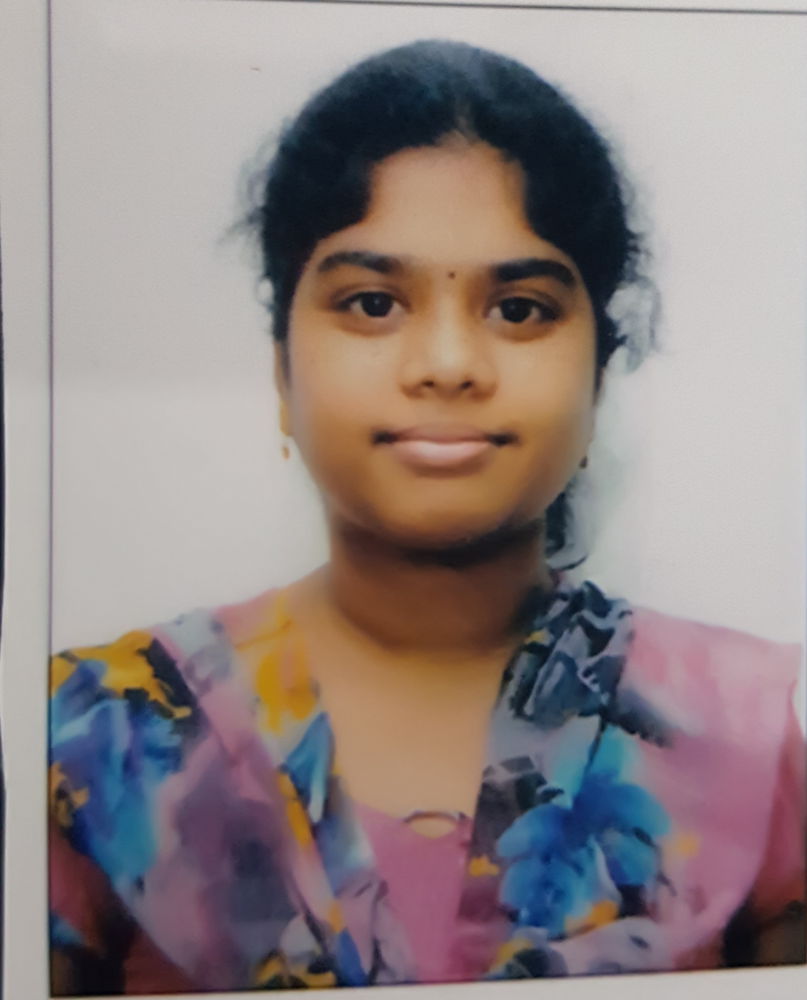

varshini.nagasarapu@gmail.com
8897210895
| YEAR | COLLEGE/INSTITUTE |
|---|---|
| 2017-2021 | SRM institute of Science and Technology, Chennai Percentage- 86% |
| 2015-2017 | SRI CHAITANYA COLLEGE Percentage- 96.2% |
| 2014-2015 | Sri Chaitanya School Percentage -95% |
Software Intern,IDC Technologies in Hyderabad (TOPIC : WEB DEVELOPMENT)
SIGNATURE